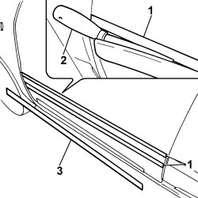
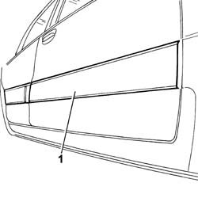
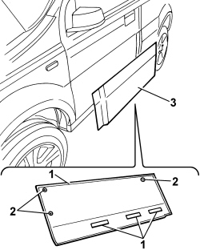
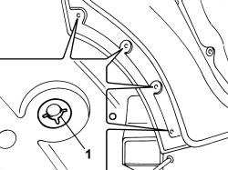
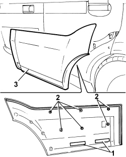
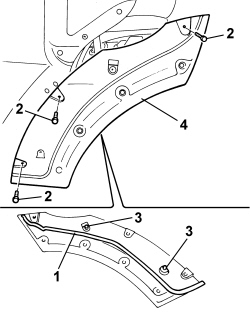
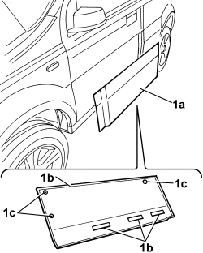
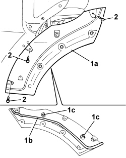
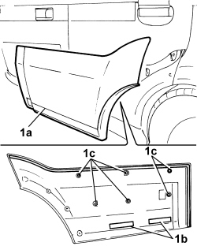

7055B38 SCUFF PANEL SIDE MOULDING (ONE) - R+R
- Path
- Procedures > 70 FITTINGS > 7055 MOULDINGS ON PROTECTIONS > 7055B EXTERIOR PROTECTIONS > 7055B38 SCUFF PANEL SIDE MOULDING (ONE) - R+R
- Kind
- repair procedure (removal / refitting; the operation number is the code)
- Applies to
- all engines; all production periods
- Interactive page
- https://sloeber94.github.io/elrnDB-fPnd/en/#/2753307
Applies to: all engines; all production periods
 Removing
Removing
 Refitting
Refitting
Applies to: engines: 1.2 8v; all production periods; only with equipment: 4x4
Removing
Refitting1. Remove the side strip.

Applies to: engines: 1.2 8v; all production periods; only with equipment: 4x4
Refitting
RemovingFit the side strip.
Applies to: engines: 1.3 JTD 16v; all production periods; only with equipment: SUV
Removing
RefittingWhen working on the FRONT door, proceed as follows.
Disconnect the negative battery terminal.
Op. 7005E12 CORNER COVER OF ONE FRONT SIDE DOOR, LH OR RH R R
Op. 7005C44 INTERIOR HANDLE PANEL - R R
Op. 7005D38 FRONT SIDE DOOR MANUAL WINDOW MECHANISM HANDLE RING-NUT - R R
Op. 7005E10 FRONT SIDE DOOR INTERIOR PANEL R R
Op. 5570T91 FRONT SIDE LOUDSPEAKER. (ONE), LEFT OR RIGHT - R.R. WITH DOOR PANEL REMOVED
Op. 7005A04 FRONT SIDE DOOR WATER GUARD PROTECTION - R R OR REPLACE WITH DOOR PANEL REMOVED
Applies to: engines: 1.3 JTD 16v; all production periods; only with equipment: SUV
1. Use a blade to cut the adhesive.
Description | Code | Function | |
|---|---|---|---|
- | Knife | 1.878.077.000 | Remove the moulding |
2. Working from inside the wheel arch compartment, undo the studs.
3. Remove the moulding.

Applies to: engines: 1.3 JTD 16v; all production periods; only with equipment: SUV
When working on the REAR door, proceed as follows.
Op. 7010D38 REAR SIDE DOOR MANUAL WINDOW MECHANISM HANDLE/RING-NUT R R
Op. 7010C44 INTERIOR HANDLE PANEL - R R
Op. 7010E10 REAR SIDE DOOR INNER PANEL - R R OR REPLACE
Op. 5570T93 REAR SIDE LOUDSPEAKER. (ONE), LEFT OR RIGHT - R.R. WITH REAR DOOR PANEL OR WING. REMOVED
Op. 7010A04 REAR SIDE DOOR WATER GUARD PROTECTION - R R OR ARRANGE WITH DOOR PANEL REMOVED
Applies to: engines: 1.3 JTD 16v; all production periods; only with equipment: SUV
1. Remove the retaining clips.

Applies to: engines: 1.3 JTD 16v; all production periods; only with equipment: SUV
1. Use a blade to cut the adhesive.
Description | Code | Function | |
|---|---|---|---|
- | Knife | 1.878.077.000 | Remove the moulding |
2. Working from inside the wheel arch compartment, undo the studs.
3. Remove the moulding.

Applies to: engines: 1.3 JTD 16v; all production periods; only with equipment: SUV
1. Use a blade to cut the adhesive.
Description | Code | Function | |
|---|---|---|---|
- | Knife | 1.878.077.000 | Remove the moulding |
2. Undo the retaining bolts.
3. Release the fastening studs.
4. Remove the moulding mount.

Applies to: engines: 1.3 JTD 16v; all production periods; only with equipment: SUV
Refitting
RemovingWhen working on the FRONT door, proceed as follows.
Thoroughly clean the area of the roof where the moulding will be bonded and remove any previous residues (where fastened to the same door).
1. Position the moulding (1a) in its seat and secure using adhesive (1b) and studs (1c).

Applies to: engines: 1.3 JTD 16v; all production periods; only with equipment: SUV
Op. 7005A04 FRONT SIDE DOOR WATER GUARD PROTECTION - R R OR REPLACE WITH DOOR PANEL REMOVED
Op. 5570T91 FRONT SIDE LOUDSPEAKER. (ONE), LEFT OR RIGHT - R.R. WITH DOOR PANEL REMOVED
Op. 7005E10 FRONT SIDE DOOR INTERIOR PANEL R R
Op. 7005D38 FRONT SIDE DOOR MANUAL WINDOW MECHANISM HANDLE RING-NUT - R R
Op. 7005C44 INTERIOR HANDLE PANEL - R R
Op. 7005E12 CORNER COVER OF ONE FRONT SIDE DOOR, LH OR RH R R
Connect the negative battery terminal.
Applies to: engines: 1.3 JTD 16v; all production periods; only with equipment: SUV
When working on the REAR door, proceed as follows.
Thoroughly clean the area of the door where the moulding will be bonded and remove any previous residues (where fastened to the same door).
1. Position the moulding (1a) in its seat and secure using adhesive (1b) and studs (1c).
2. Tighten the fixing bolts.

Applies to: engines: 1.3 JTD 16v; all production periods; only with equipment: SUV
Thoroughly clean the area of the roof where the moulding will be bonded and remove any previous residues (where fastened to the same door).
1. Position the moulding (1a) in its seat and secure using adhesive (1b) and studs (1c).

Applies to: engines: 1.3 JTD 16v; all production periods; only with equipment: SUV
1. Restore the retaining clips.
Applies to: engines: 1.3 JTD 16v; all production periods; only with equipment: SUV
Op. 7010A04 REAR SIDE DOOR WATER GUARD PROTECTION - R R OR ARRANGE WITH DOOR PANEL REMOVED
Op. 5570T93 REAR SIDE LOUDSPEAKER. (ONE), LEFT OR RIGHT - R.R. WITH REAR DOOR PANEL OR WING. REMOVED
Op. 7010E10 REAR SIDE DOOR INNER PANEL - R R OR REPLACE
Op. 7010C44 INTERIOR HANDLE PANEL - R R
Op. 7010D38 REAR SIDE DOOR MANUAL WINDOW MECHANISM HANDLE/RING-NUT R R
Topics linked from this page (11)
- 5570T91 Front SIDE LOUDSPEAKER. (one), left or right - R.R. with door panel removed
- 5570T93 REAR SIDE LOUDSPEAKER. (one), left or right - R.R. with rear door panel or wing. removed
- 7005A04 front side door water guard protection - r r or replace with door panel removed
- 7005C44 interior handle panel - r r
- 7005D38 front side door manual window mechanism handle ring-nut - r r
- 7005E10 front side door inner panel - r r for replacement
- 7005E12 corner cover of one front side door, lh or rh r r
- 7010A04 rear side door water guard protection - r r or arrange with door panel removed
- 7010C44 interior handle panel - r r
- 7010D38 rear side door manual window mechanism handle/ring-nut r r
- 7010E10 rear side door inner panel - r r or replace